Momen 1
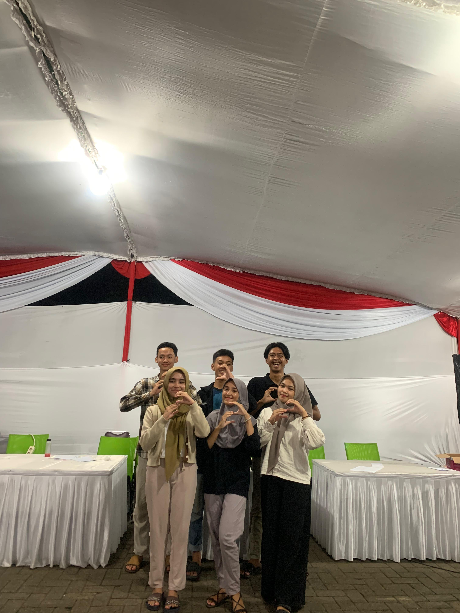
waktu temu perdana nih wkwk waktu kamu takut aku sama zadal berantem
pertama kali aku ketemu kamu dan aku takut buat nobrol sama kamu karna jujur waktu itu cuma kamu sek palin cantik se kmw makane aku g berni deketin eh siapa sangka sekrng jadi ayang e kamu awaw
Momen 2
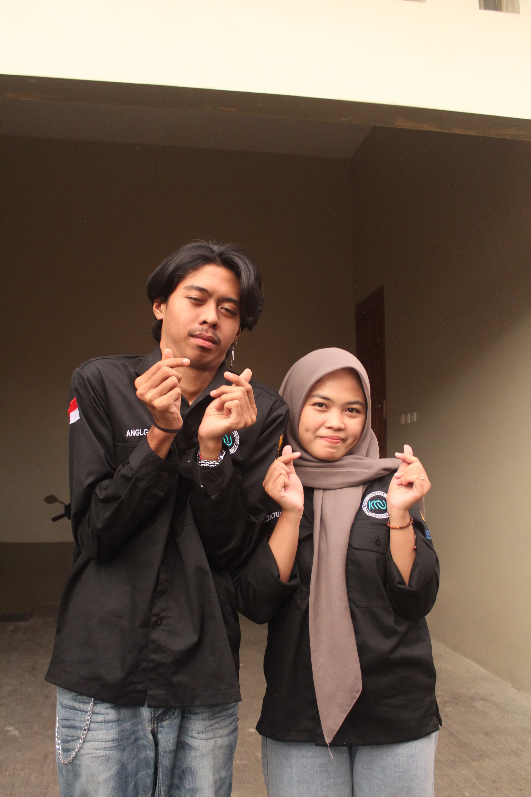
eghem foto pertama kita nih yang foto bareng waktu makrab wwkwk
inget nda aku gombalin kamu pake intro sempurna, walaupun kadang klo inet malu sendiri tapi itu pematik aku suka sama kamu ahhih
disitulah aku mulai tumbuh rasa awww
Momen 3
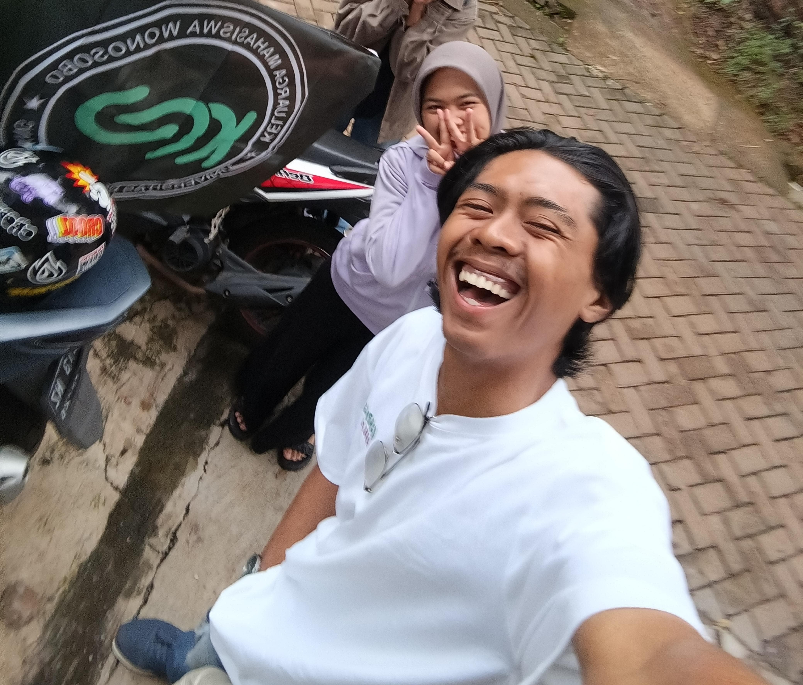
foto dimana aku ambil bendera
modus dikit mau jemput kamu awkawk
san sebungah itu wakru aku di post "manuia terefort" wkkw
Momen 4
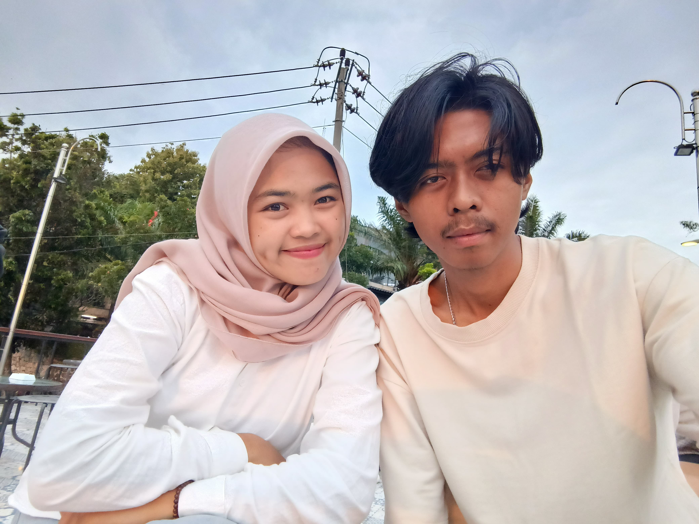
ini foto kita waktu pertama kali ngedate
disini belum pacaran lagi pdkt ea ea
ini foto favoritku hihi
Momen 5
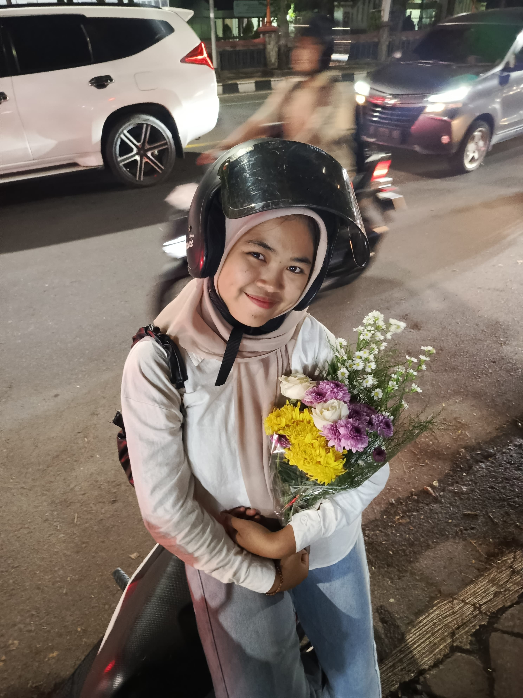
your smile like a flower.
Momen 6
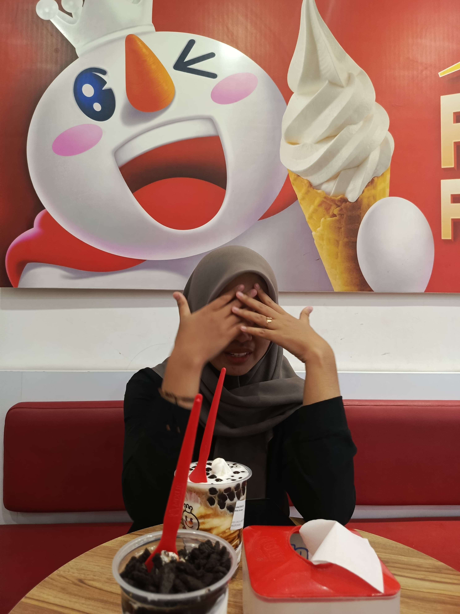
huhuuuuu sedih di bantai tugas sama dosen waktu d2 kuliah :'].
seneng bgt waktu itu kamu ngadu ke aku awkaw lucuuuk polll
Momen 7
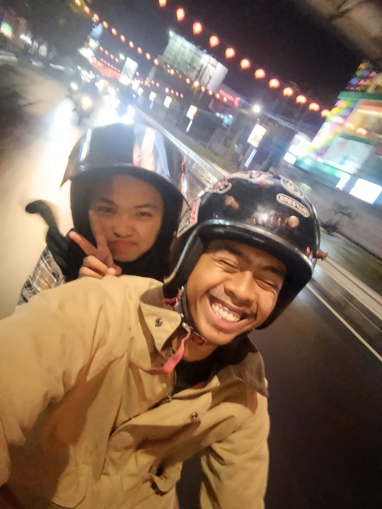
foto waktu pertama kali kamu cium akuuu aw aw
di jalan aku kegirangan sendirii wkwk
Momen 8
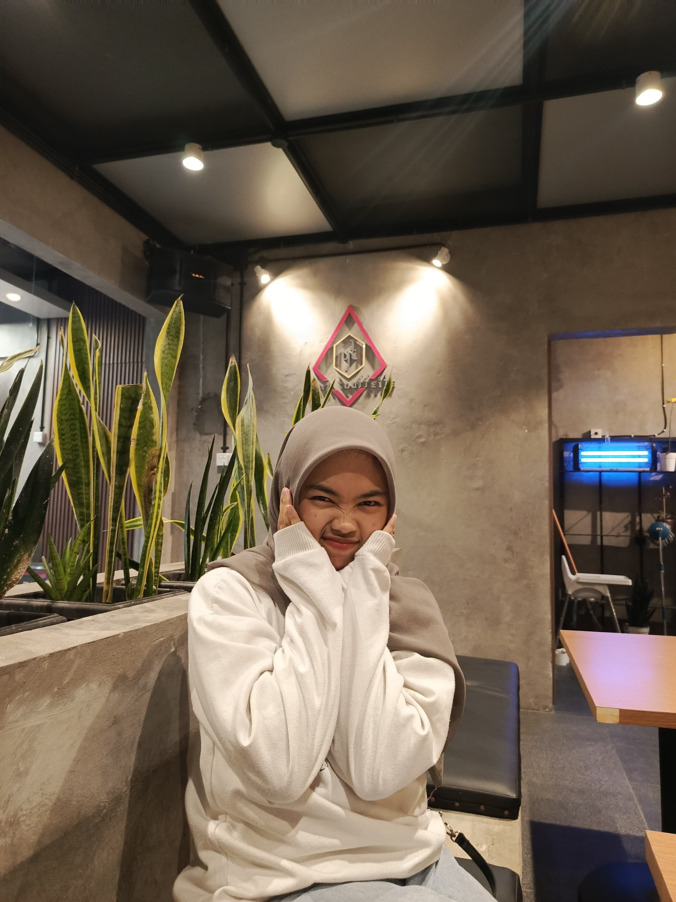
ko ini pertama kali aku buka bersama di wsb sama ayangg.
pemuda 3 hari ga buka di rumah
Momen 9
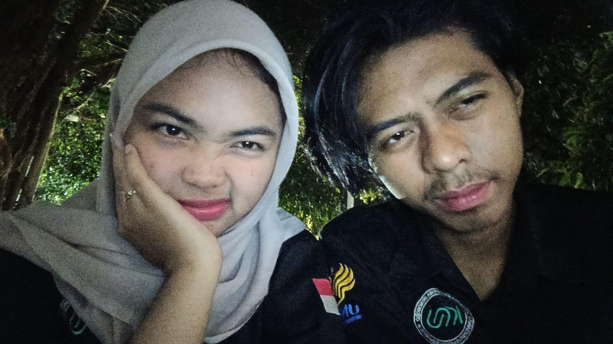
tgl 30 maret aku menyatakan cintaku padamu di motor awawaw.
dimotor hujan hujannn takut di tolak wkkw
Momen 10
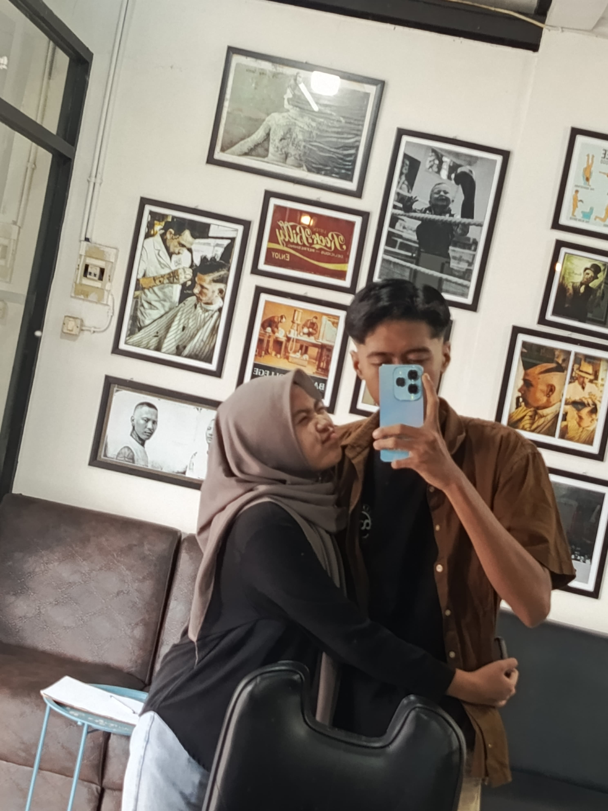
eghem g gondrong nih.
ntut salting 7 minggu
Momen 11
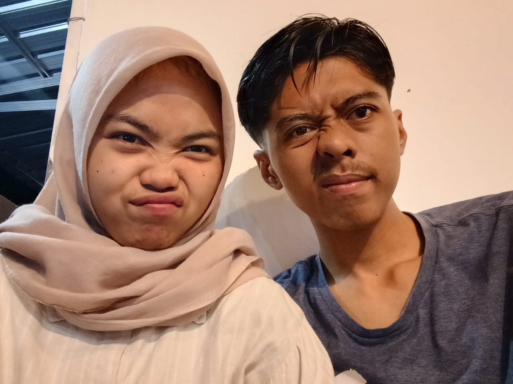
ini waktu ayang pundung abis tu kita jalan jalaaannn.
nusa dulu baru nugas baru kamu wwkkw
Momen 12
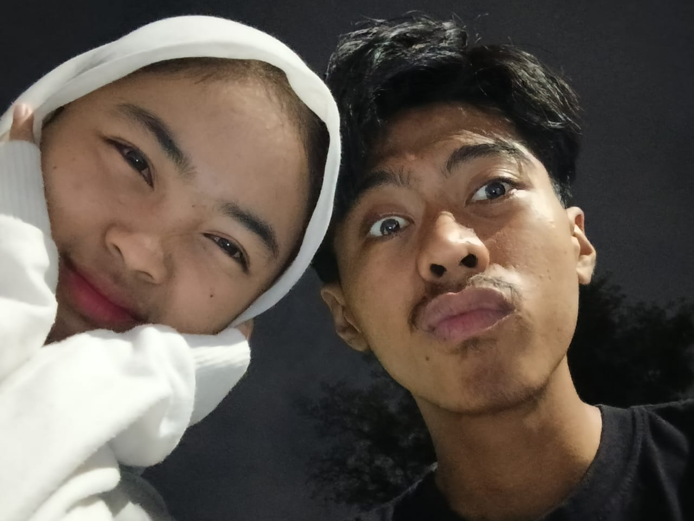
klo ini foto terkhir kitaaa hihihi.
kangen bgtt maacii udah mw ketemuuuu happy btttt besok besok ketemu lagi yaaa
belum ke marina, belum beli eskrim ah lupaa tadi mau beliin kamu eskrim tapi uang e kepake buat mantol huhuuuuuu sedih
Momen 13
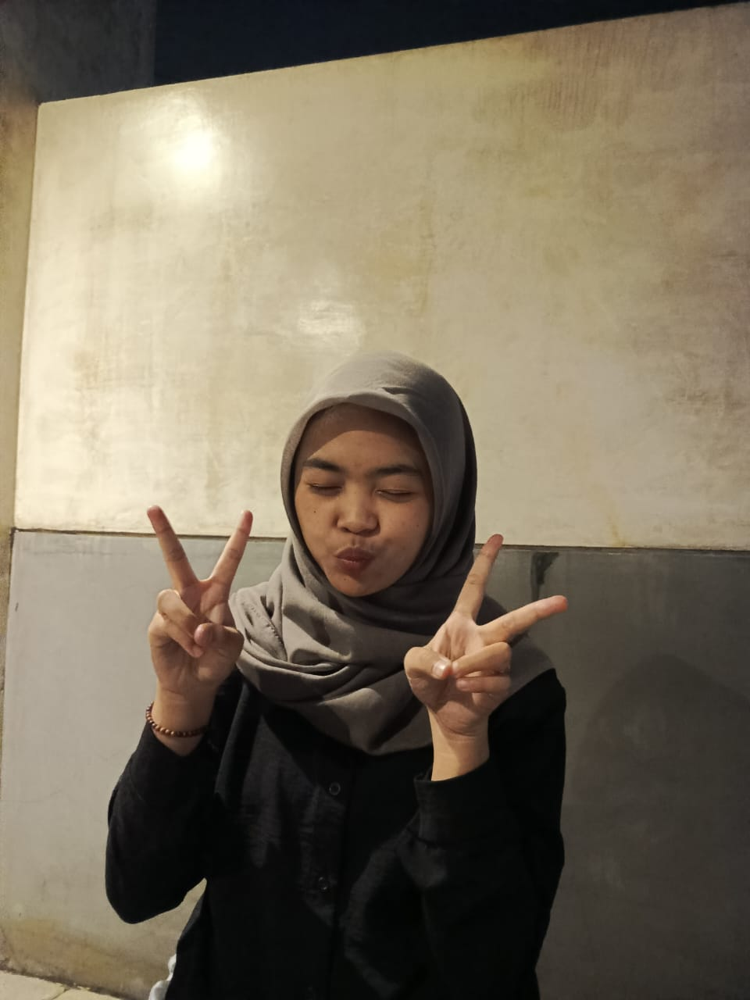
INI AYANG E AKU SEK PALING MEMBANGGAKAN